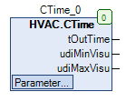

CTime (FB)¶
FUNCTION_BLOCK CTime
Kurzbeschreibung¶
Konvertierung einer Zeiteingabe (UDINT) in eine Zeitausgabe (TIME). Die Skalierung für die Zeiteingabe kann ausgewählt werden. Automatische Berechnung von Min/Max Grenzen für die Eingabe sowie Überwachung der Eingabe.
Darstellung¶

Schnittstellen¶
Eingänge¶
Ausgänge¶
Name Datentyp Wertebereich Initialwert Funktion tOutTime TIME 0 ... 4294967295ms Zeitangabe im Format TIME udiMinVisu UDINT Anzeige von tMinTime für die Visualisierung udiMaxVisu UDINT Anzeige von tMaxTime für die Visualisierung
Sollwerte / Parameter¶
Name Datentyp Wertebereich Initialwert Funktion udiTime UDINT 0 ... 4294967295 Zeiteingabe (absolute Grenzen: 0..7 Tage) je nach Skalierung eTimeScale eZeit Sekunden, Minuten, Stunden eZeit.Sekunden Festlegung der Skalierung der Zeiteingabe (Sekunden, Minuten, Stunden) tMinTime TIME 0 ... 4294967295ms 0s Untergrenze für die Zeiteingabe udiTime tMaxTime TIME 0 ... 4294967295ms 2h Obergrenze für die Zeiteingabe udiTime
Funktionsbeschreibung¶
Allgemeines¶
Dieser Funktionsbaustein dient zur Konvertierung einer Zeiteingabe udiTime in eine Zeitausgabe tOutTime.
Die Skalierung für die Zeiteingabe udiTime erfolgt über den Sollwert und Parameter eTimeScale.
Die Zeiteingabe ist absolut auf einen Wertebereich von 0 ... 7 Tage beschränkt.
Die Zeiteingabe wird durch eine Untergrenze tMinTime und eine Obergrenze tMaxTime begrenzt, beide Grenzen unterliegen ebenfalls der Skalierung.
Die Zeitausgabe tOutTime wird dementsprechend auch auf die Bereich tMinTime - tMaxTime begrenzt.
Überschreitet die Untergrenze tMinTime die Obergrenze tMaxTime, so wird die Untergrenze tMinTime auf die Obergrenze reduziert.
Dieser Baustein kann z.B. für die Eingabe in einer Visualisierung genutzt werden.
Visualisierung¶
Passendes Visualisierungselement aus der HVACV Visu Library: CTime und CTime_single_input
Darstellung¶
Schnittstellen Visu-Element¶
Name Datentyp Typ Initialwert Funktion FB_CTime CTime VAR_IN_OUT Hier FB Instanz CTime eintragen Bsp. PRG.CTime sDialogTitle STRING VAR_INPUT Titel im Stringformat eingeben z.B: ‘Eingabe Raumtemperatur’ - erscheint im Numpad bei der Eingabe. iFieldSizeL INT VAR_INPUT 0 Feld vergößert sich um Anzahl der eingegebenen Pixel nach links. Wird benötigt um lange Zahlen oder Einheiten anzuzeigen. iFieldSizeR INT VAR_INPUT 0 Feld vergößert sich um Anzahl der eingegebenen Pixel nach rechts. Wird benötigt um lange Zahlen oder Einheiten anzuzeigen.
Die Einheit Sekundee ‘s’ Minute ‘m’ oder Stunde ‘h’ wird automatisch über die Einstelluing im FB CTime angepasst. Die MIN und MAX Eingabegrenze wird auch automatisch über den FB erzeugt und im Visuelement angepasst. Kann zur Laufzeit geändert werden! | | Hinweis: VAR_IN_OUT Schnittstellen müssen belegt werden, VAR_INPUT sind optional. | |
Das Visualisierungselement CTime_single_input funktioniert wie CTime jedoch müssen alle Eingaben separat über die Schnittstellen eingetragen werden. Man kann somit diese Visualisierungselement auch ohne dein Baustein CTime verwenden.
Schnittstellen Visu-Element CTime_single_input¶
Name Datentyp Typ Initialwert Funktion udiTime UDINT VAR_IN_OUT Hier die UDINT Variable eintragen. eTimeScale HVAC.eTime VAR_INPUT Hier kann das Enum eTimeScale eingetragen werden. Anzeige ob Sekunde, Minute oder Stunde. udiMinVisu UDINT VAR_INPUT 0 Hier kann die MIN Eingabegrenze eingegeben werden. Eingaben darunter werden über die Visualisieurng nicht akzeptiert. udiMaxVisu UDINT VAR_INPUT 7200 Hier kann die MAX Eingabegrenze eingegeben werden. Eingaben darüber werden über die Visualisieurng nicht akzeptiert. sDialogTitle STRING VAR_INPUT Titel im Stringformat eingeben z.B: ‘Eingabe Nachlaufzeit’ - erscheint im Numpad bei der Eingabe. iFieldSizeL INT VAR_INPUT 0 Feld vergößert sich um Anzahl der eingegebenen Pixel nach links. Wird benötigt um lange Zahlen oder Einheiten anzuzeigen. iFieldSizeR INT VAR_INPUT 0 Feld vergößert sich um Anzahl der eingegebenen Pixel nach rechts. Wird benötigt um lange Zahlen oder Einheiten anzuzeigen.
Codesys¶
- InOut:
Scope Name Type Initial Comment Input tMaxTime TIME TIME#120m0s0ms Obergrenze für die Zeiteingabe udiTime (0 ... 4294967295ms) tMinTime TIME TIME#0ms Untergrenze für die Zeiteingabe udiTime (0 ... 4294967295ms) eTimeScale eTime eTime.Second Festlegung der Skalierung der Zeiteingabe (Sekunden, Minuten, Stunden) udiTime UDINT Zeiteingabe (absolute Grenzen: 0..7 Tage) je nach Skalierung Output tOutTime TIME Zeitangabe im Format TIME udiMinVisu UDINT Anzeige von tMinTime für die Visualisierung udiMaxVisu UDINT Anzeige von tMaxTime für die Visualisierung